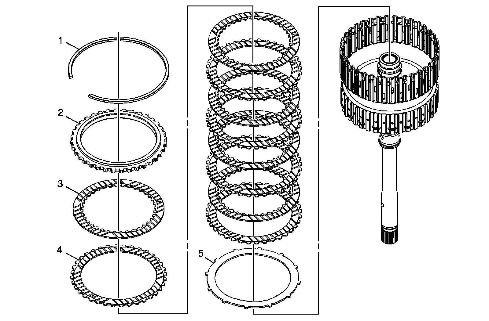
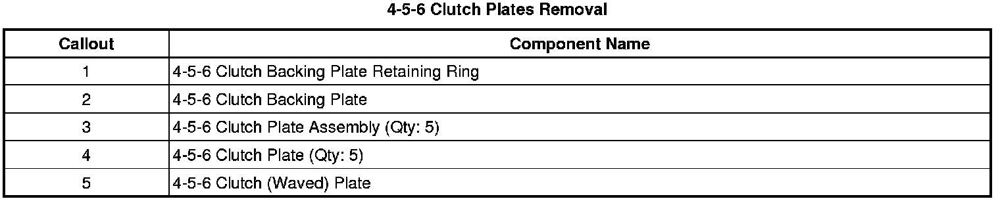
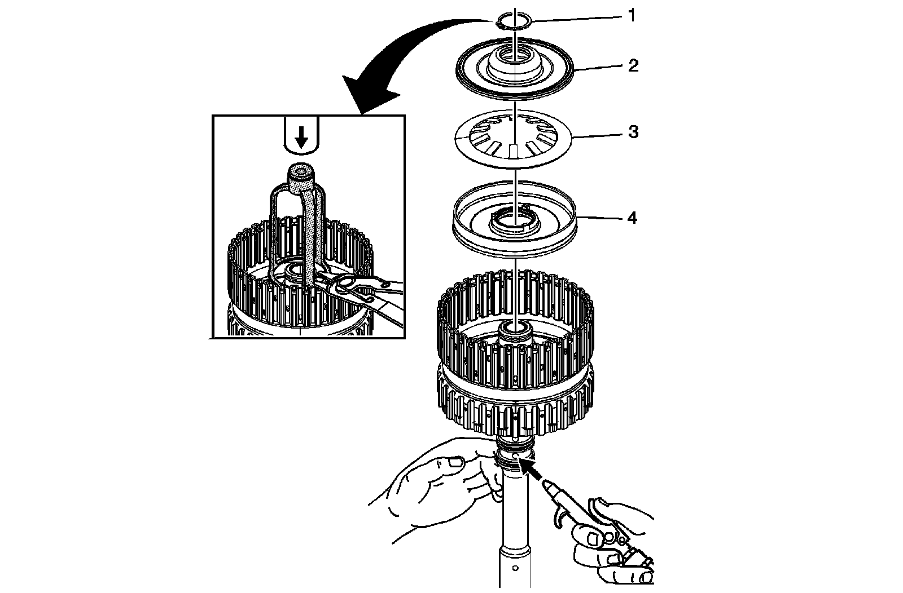
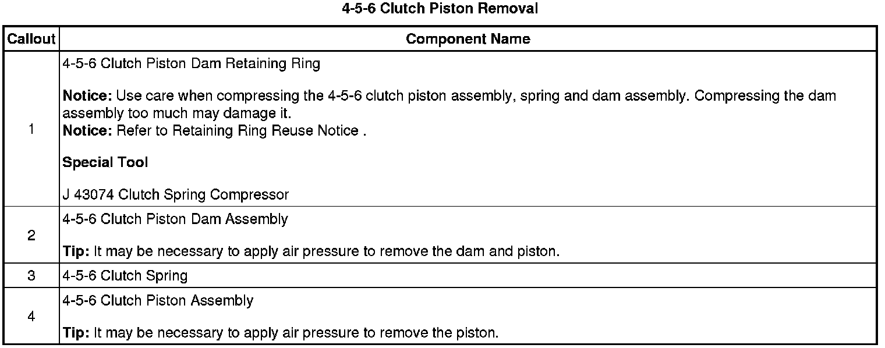
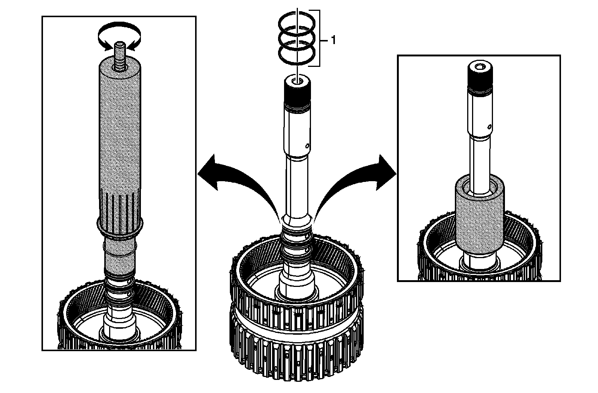
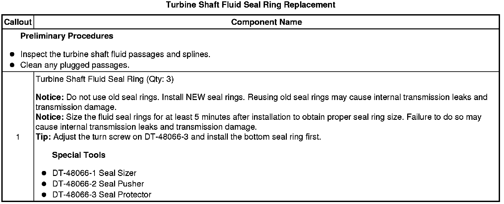
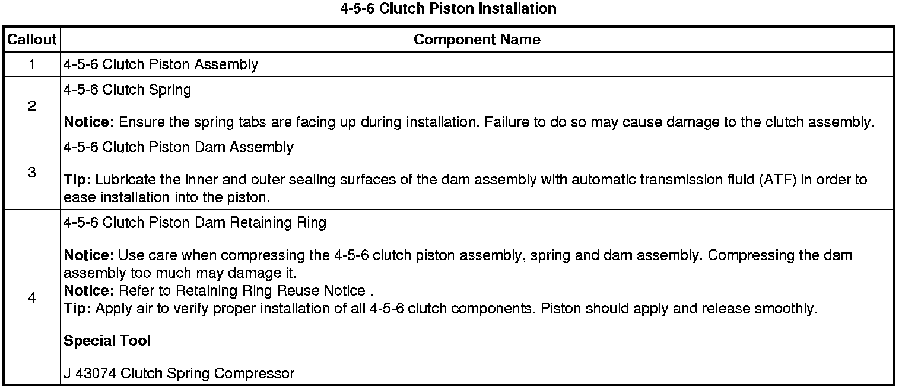
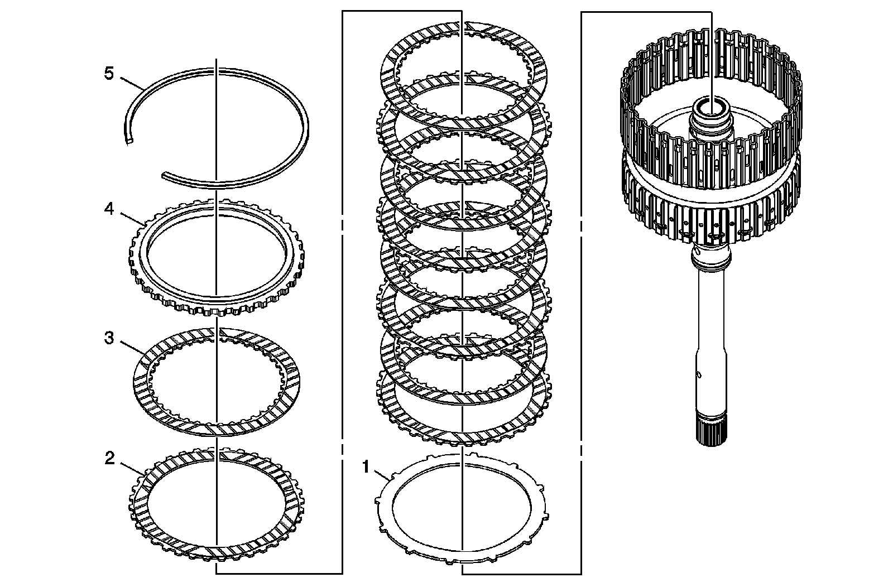
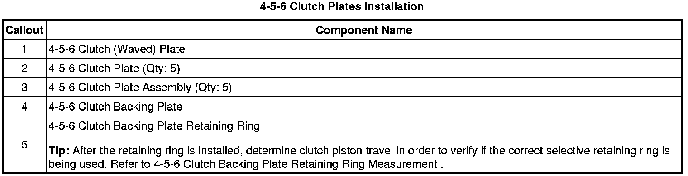

4-5-6 Clutch Overhaul (6L50)
4-5-6 Clutch Overhaul (6L50)
4-5-6 Clutch Plates Removal


4-5-6 Clutch Piston Removal


Turbine Shaft Fluid Seal Ring Replacement


4-5-6 Clutch Piston Installation

4-5-6 Clutch Plates Installation

